한국사능력검정시험-심화 (2011-10-22 기출문제)
1. (가)에 들어갈 자료로 적절한 것은? [3점]
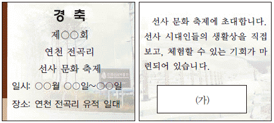
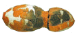
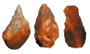
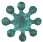
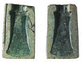
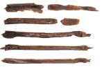
(정답률: 87%)

2. 다음 국가에 대한 설명으로 옳은 것은? [1점]
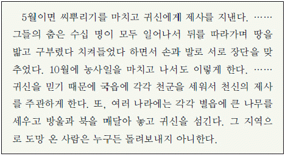
- 신지, 읍차 등의 지배자가 있었다.
- 가(加)들이 흉년이 들면 왕에게 그 책임을 물었다.
- 다른 부족의 영역을 침범하면 배상하는 책화가 있었다.
- 중대한 범죄자는 제가 회의를 통하여 사형에 처하였다.
- 가매장했던 가족의 뼈를 추려 가족 공동 무덤에 안치하였다.
(정답률: 75%)
3. (가), (나)에 대한 설명으로 옳은 것을 <보기>에서 고른 것은? [1점]
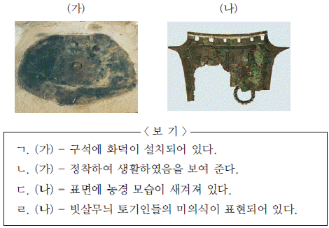
- ㄱ, ㄴ
- ㄱ, ㄷ
- ㄴ, ㄷ
- ㄴ, ㄹ
- ㄷ, ㄹ
(정답률: 66%)
4. (가) 국가에 대한 설명으로 옳은 것을 <보기>에서 고른 것은? [2점]
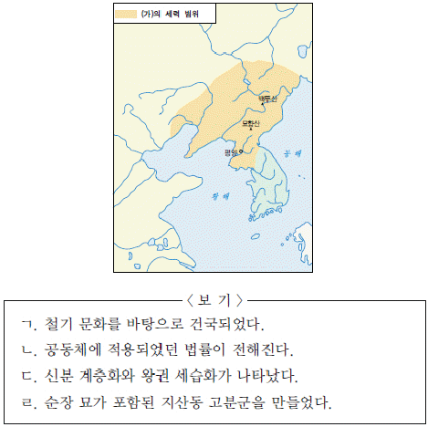
- ㄱ, ㄴ
- ㄱ, ㄷ
- ㄴ, ㄷ
- ㄴ, ㄹ
- ㄷ, ㄹ
(정답률: 51%)
5. 지도의 붉게 표시한 지역에서 볼 수 있는 문화유산으로 옳지 않은 것은? [2점]
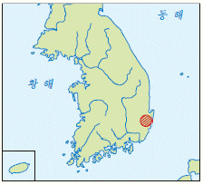
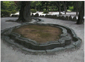
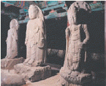
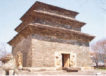
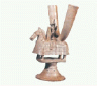
(정답률: 26%)
6. 다음 역사 탐방에서 볼 수 있는 문화유산을 <보기>에서 일정대로 고른 것은?(순서대로 1일, 2일, 3일) [2점]
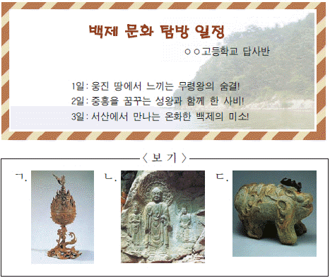
- ㄱ - ㄴ - ㄷ
- ㄱ - ㄷ - ㄴ
- ㄴ - ㄱ - ㄷ
- ㄷ - ㄱ - ㄴ
- ㄷ - ㄴ - ㄱ
(정답률: 49%)
7. 다음 수업 장면에서 학생의 답변으로 옳지 않은 것은? [3점]
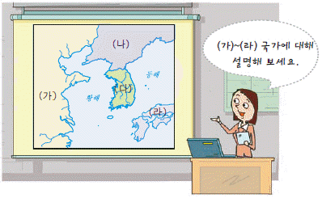
- 갑: (가)는 빈공과 합격자 수를 조절하여 (나), (다)의 경쟁을 부추겼어요.
- 을: (가)는 (나)와 초기에 친선을 유지하였으나 후기에는 대립하였어요.
- 병: (나)는 (가)와 대등함을 과시하기 위해 독자적 연호를 사용하였어요.
- 정: (나)는 (다)를 견제하기 위하여 (라)와 친선 관계를 도모하였어요.
- 무: (다)는 (나)와 신라도를 따라 사신을 교환하고 무역하였어요.
(정답률: 50%)
8. 다음 조치가 발표된 시기를 연표에서 옳게 고른 것은? [2점]
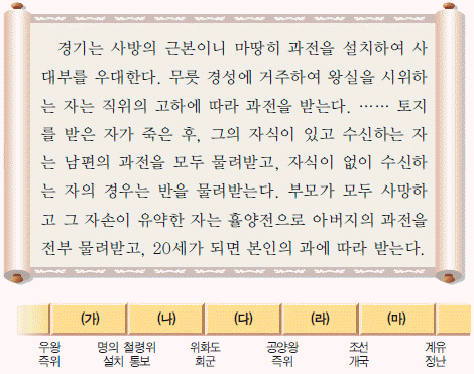
- (가)
- (나)
- (다)
- (라)
- (마)
(정답률: 56%)
9. 지도는 고대 문화의 일본 전파를 나타낸 것이다. (가)~(라)와 관련된 문화재로 옳은 것만을 <보기>에서 모두 고른 것은? [2점]
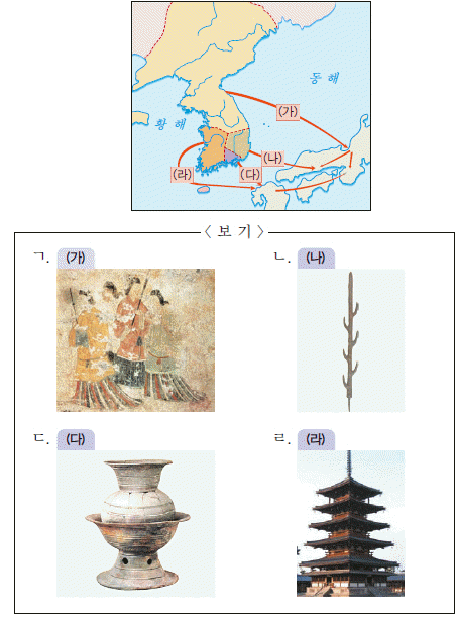
- ㄱ, ㄴ
- ㄱ, ㄹ
- ㄷ, ㄹ
- ㄱ, ㄷ, ㄹ
- ㄴ, ㄷ, ㄹ
(정답률: 50%)
10. (가), (나)에 대한 설명으로 옳은 것은? [1점]
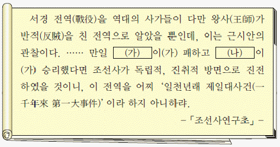
- (가) - 개경을 중심으로 한 보수적인 문벌 귀족이었다.
- (가) - 불교적 요소와 도참 사상이 결합된 민간 신앙을 신봉하였다.
- (나) - 교정도감과 정방을 통해 정치권력을 장악하였다.
- (나) - 국왕을 황제라 칭하고 준풍을 연호로 사용할 것을 주장하였다.
- (가), (나) - 대결 과정에서 개경의 궁궐 일부가 소실되었다.
(정답률: 67%)
11. (가)~(라) 사건을 일어난 순서대로 옳게 나열한 것은? [3점]
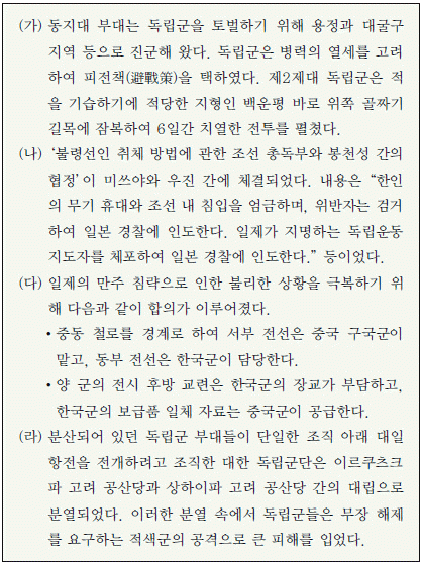
- (가) - (나) - (라) - (다)
- (가) - (다) - (나) - (라)
- (가) - (라) - (나) - (다)
- (라) - (가) - (나) - (다)
- (라) - (나) - (가) - (다)
(정답률: 34%)
12. 교사의 질문에 대한 답변으로 적절하지 않은 것은? [2점]
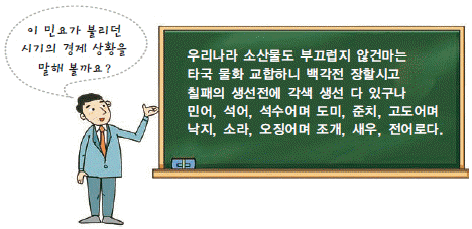
- 갑: 정부는 저화를 만들어 유통하려 하였어요.
- 을: 중도아가 시전에서 물건을 떼다가 팔았어요.
- 병: 덕대가 물주의 자본으로 광산을 운영하였어요.
- 정: 전국에 지점을 두고 활동하는 사상이 있었어요.
- 무: 강경포, 원산포 등이 상업의 중심지로 번성하였어요.
(정답률: 35%)
13. 다음은 어느 시기를 주제로 꾸민 역사 신문이다. (가)에 들어갈 기사의 제목으로 적절한 것은? [2점]
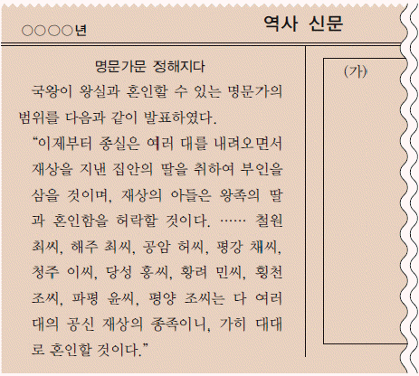
- 집중 취재 - 날로 늘어나는 장시, 그 원인은
- 기획 특집 - 대중화된 무명 옷, 의생활을 바꾸다
- 정책 진단 - 재정 확충 위한 소금 전매제, 그 효과는
- 신간 소개 - 「금양잡록」, 농사의 생생한 경험을 담다
- 농촌 탐방 - 새로운 먹거리, 감자와 고구마 재배 확산
(정답률: 26%)
14. (가)~(마) 문화유산에 대한 설명으로 옳지 않은 것은? [3점]
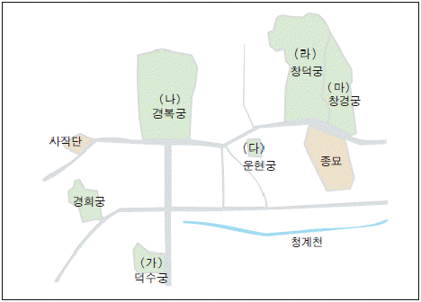
- (가) - 황제의 집무실 용도로 석조전을 지은 곳이다.
- (나) - 미·소 공동 위원회가 개최된 곳이다.
- (다) - 서원 철폐 등의 개혁을 논의한 곳이다.
- (라) - 정조의 개혁을 뒷받침해 준 규장각이 있는 곳이다.
- (마) - 일제가 격을 낮추기 위해 동물원을 만든 곳이다.
(정답률: 51%)
15. 조선 시대의 통치 기구 (가)~(다)에 대한 설명으로 옳지 않은 것은? [1점]
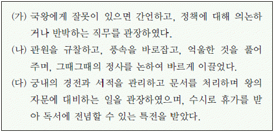
- (가) - 백관의 규찰과 국왕의 보필 기능을 수행하였다.
- (나) - 대역모반 등 국가의 큰 죄인을 다스렸다.
- (다) - 옥당, 청연각이라고도 불리었다.
- (가), (나) - 간쟁·봉박·서경을 담당하였다.
- (가), (나), (다) - 학문과 덕망이 높은 사람이 주로 임명 되었으며 청요직이라 불렸다.
(정답률: 40%)
16. 다음 특강의 강좌별 제시 자료로 적절하지 않은 것은? [2점]
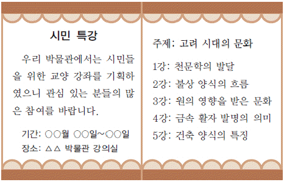
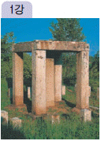
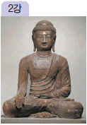
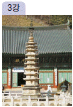
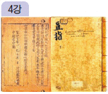
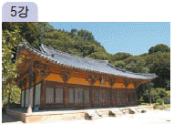
(정답률: 35%)
17. 지도는 우리나라 국경선의 변화를 나타낸 것이다. (가)~(마)와 관련된 사실로 옳지 않은 것은? [2점]
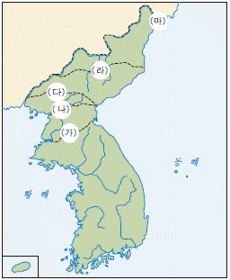
- (가) - 신라가 당을 물리치고 삼국을 통일하였다.
- (나) - 태조 왕건이 북진 정책을 추진하여 영토를 확장하였다.
- (다) - 별무반이 출정하여 여진을 몰아내고 성을 쌓았다.
- (라) - 공민왕이 원의 세력 약화를 이용하여 영토를 수복하였다.
- (마) - 세종이 삼남의 일부 주민을 이주시키고 토관을 임명하였다.
(정답률: 39%)
18. 다음 시의 작가에 대한 설명으로 옳은 것을 <보기>에서 고른 것은? [2점]
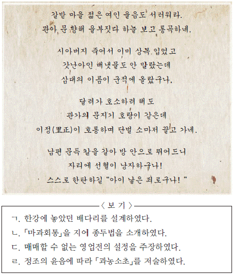
- ㄱ, ㄴ
- ㄱ, ㄷ
- ㄴ, ㄷ
- ㄴ, ㄹ
- ㄷ, ㄹ
(정답률: 23%)
19. 밑줄 그은 (ㄱ)~(ㅁ) 정책의 결과로 옳지 않은 것은? [2점]
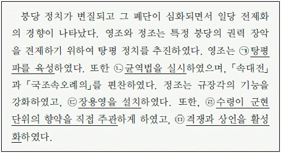
- (ㄱ) - 국왕 중심의 정치 집단이 형성되었다.
- (ㄴ) - 군포 수입을 보충하기 위해 결작이 부과되었다.
- (ㄷ) - 국왕의 친위 체제가 강화되었다.
- (ㄹ) - 중앙 세력과 재지사족의 협력 토대가 강화되었다.
- (ㅁ) - 백성과 국왕이 직접 소통할 수 있는 기회가 많아졌다.
(정답률: 40%)
20. (가) 시기에 볼 수 있는 장면으로 적절한 것은? [2점]
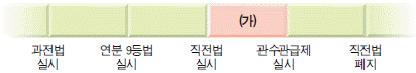
- 군인전을 경작하는 직업 군인
- 수신전을 받아 생활하는 미망인
- 평양 주변의 과전을 둘러보는 관리
- 시지(柴地)에서 땔감을 나르는 노비
- 과전의 수확량을 조사하는 전주(田主)
(정답률: 32%)
21. 다음 사상을 중심으로 형성된 학파에 대한 설명으로 옳은 것은? [2점]
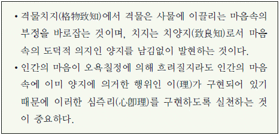
- 인물성동이론에 관한 논쟁을 벌였다.
- 예학을 학술적 연구의 대상으로 삼았다.
- 일반 민을 도덕 실천의 주체로 인정하였다.
- 군주 스스로가 성학을 따를 것을 제시하였다.
- 농민 생활을 안정시키기 위해 여전론을 제시하였다.
(정답률: 28%)
22. 다음 정책에 대해 나눈 대화 내용으로 옳은 것을 <보기>에서 고른 것은? [1점]
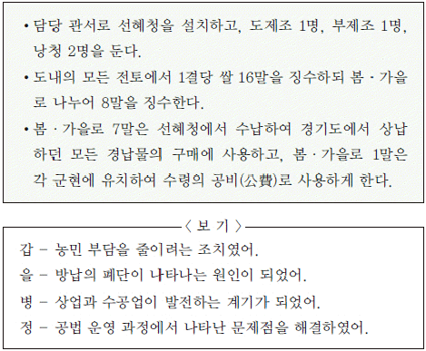
- 갑, 을
- 갑, 병
- 을, 병
- 을, 정
- 병, 정
(정답률: 36%)
23. 다음 서적이 저술된 시기의 상황으로 옳지 않은 것은? [3점]
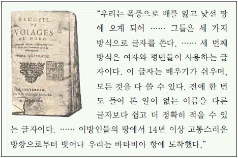
- 서인이 국정을 주도하였다.
- 서학이 학문으로 들어와 연구되었다.
- 재정 확보를 위해 공명첩이 발급되었다.
- 과부의 재가를 금지하는 법령이 반포되었다.
- 혼인 후에 곧바로 신랑 집에서 생활하는 경우가 많아졌다.
(정답률: 27%)
24. (가) 세력에 대한 설명으로 옳은 것은? [2점]
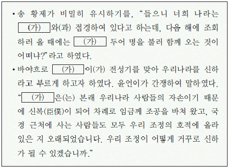
- 동북 9성의 반환을 요구하였다.
- 고려의 화포 공격으로 퇴각하였다.
- 비단, 자기, 서적 등을 수출하였다.
- 서희와 담판한 후 강동 6주를 넘겼다.
- 일본 원정 기구로 정동행성을 설치하였다.
(정답률: 38%)
25. 다음 자료와 관련된 민족 운동에 대한 설명으로 옳은 것은? [1점]
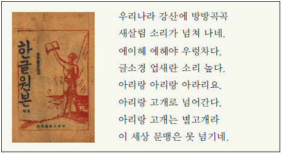
- 「자활」,「장산」등의 잡지를 간행하였다.
- 대구에서 시작되어 전국으로 확산되었다.
- “아는 것이 힘, 배워야 산다.”라는 구호를 내걸었다.
- 조선의 고유한 것을 찾아 학술적으로 체계화하였다.
- 우리 민족의 손으로 고등 교육 기관을 설립하려 하였다.
(정답률: 54%)
26. 다음 자료와 관련된 화폐로 옳은 것은? [2점]
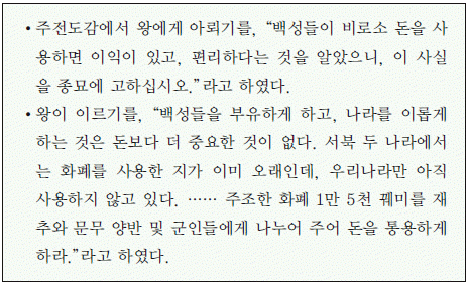
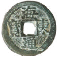
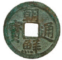
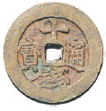
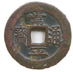
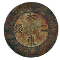
(정답률: 27%)
27. 지도는 어느 사건의 전개 과정을 나타낸 것이다. 이 사건의 수습 과정에서 나온 개혁 방안으로 적절하지 않은 것은? [3점]
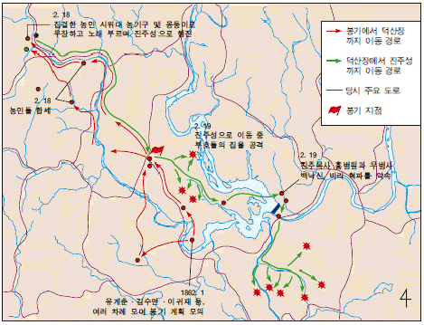
- 전정을 공정하게 운영하자.
- 황구첨정의 폐단을 없애자.
- 사창제(社倉制)를 실시하자.
- 동포제(洞布制)를 실시하자.
- 세금을 군현 단위의 총액제로 징수하자.
(정답률: 34%)
28. (가), (나)에 해당하는 작품으로 적절한 것을 <보기>에서 고른 것은?(순서대로 가, 나) [2점]
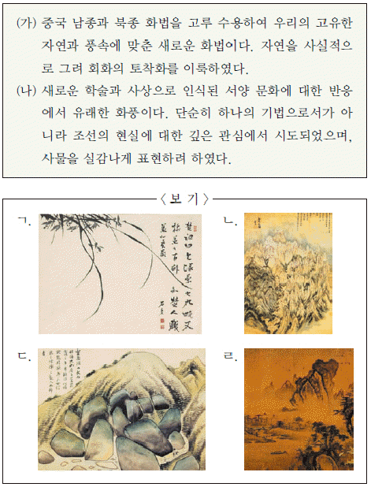
- ㄱ ㄴ
- ㄱ ㄷ
- ㄴ ㄷ
- ㄴ ㄹ
- ㄹ ㄷ
(정답률: 43%)
29. (가)~(마)에 들어갈 내용으로 적절하지 않은 것은? [2점]
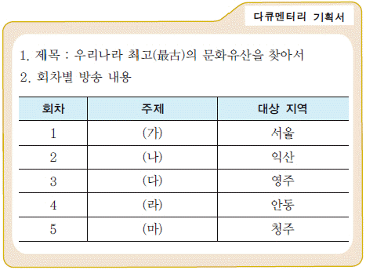
- (가) - 약현 성당
- (나) - 미륵사지 석탑
- (다) - 소수 서원
- (라) - 봉정사 극락전
- (마) - 상원사 동종
(정답률: 31%)
30. 표와 같이 파견된 외교 사절에 대한 설명으로 옳은 것은? [1점]
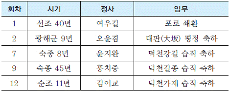
- 최초로 태극기를 사용하였다.
- 교린 정책의 일환으로 파견되었다.
- 「일동기유」라는 보고서를 제출하였다.
- 조공과 회사(回賜) 형태의 연행 무역을 하였다.
- 정초(正初), 동지 등에 정기적으로 파견되었다.
(정답률: 34%)
31. 다음 문화유산과 관련된 설명으로 옳지 않은 것은? [2점]
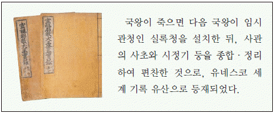
- 편찬 과정에 국왕이 간여할 수 없었다.
- 초초(初草), 중초(中草), 정초(正草) 단계로 편찬되었다.
- 4대 사고에 보관되다 임진왜란 후 5대 사고에 보관되었다.
- 기밀 유지를 위해 편찬에 사용된 자료는 세초(洗草)되었다.
- 국정을 날짜순으로 기록한 최대 분량의 단일 역사 기록물이다.
(정답률: 23%)
32. 다음 상황이 벌어진 시기의 사회 모습으로 적절한 것은?[1점]
- 광혜원에서 진료하는 의사
- 전차를 타고 청량리로 가는 학생
- 인천으로 가는 기차를 운전하는 기관사
- 당일 발행된 한성순보를 보고 있는 노인
- 경복궁에 설치된 전등을 관리하는 기술자
(정답률: 34%)
33. 다음 글을 지은 인물에 대한 설명으로 옳은 것은? [2점]
- 김굉필, 유호인 등을 제자로 길렀다.
- 서원을 건립하여 후학을 양성하였다.
- 권근, 하륜 등과「동국사략」을 편찬하였다.
- 세조의 왕위 찬탈에 반대하다 죽임을 당하였다.
- 향약의 실시, 내수사 장리 폐지 등의 개혁을 주도하였다.
(정답률: 33%)
34. 다음과 같이 군제를 개편한 내각이 추진한 개혁의 내용으로 옳은 것을 보기에서 고른 것은? [2점]
- ㄱ, ㄴ
- ㄱ, ㄷ
- ㄴ, ㄷ
- ㄴ, ㄹ
- ㄷ, ㄹ
(정답률: 18%)
35. (가)~(라)와 관련된 설명으로 옳은 것만을 <보기>에서 모두 고른 것은? [2점]
- ㄱ, ㄴ
- ㄱ, ㄹ
- ㄴ, ㄷ
- ㄱ, ㄴ, ㄷ
- ㄴ, ㄷ, ㄹ
(정답률: 22%)
36. 다음 기사에서 소개하는 사진전에서 전시 자료로 적절한 것을 보기에서 고른 것은? [2점]
- ㄱ, ㄴ
- ㄱ, ㄷ
- ㄴ, ㄷ
- ㄴ, ㄹ
- ㄷ, ㄹ
(정답률: 32%)
37. 다음은 어느 선언문과 이에 대한 언론의 반응이다. 이 선언문에 대한 설명으로 옳지 않은 것은? [3점]
- 찬양회의 첫 공식 집회에서 낭독되었다.
- 우리나라 최초의 근대적 여권 선언으로 평가된다.
- 서울 북촌 양반 부인들이 뜻을 일으켜 발표하였다.
- 우리나라에서 최초로 여학교가 세워지는 배경이 되었다.
- 천부인권 사상을 바탕으로 남녀 평등권의 획득을 구상하
(정답률: 27%)
38. 지도는 어느 사건의 전개 과정을 나타낸 것이다. 이 사건과 관련한 (가)~(다) 세력의 활동으로 옳지 않은 것은? [2점]
- (가) - 개혁 정강을 국왕의 전교로 공포하였다.
- (나) - 국왕의 환궁을 호위하였다.
- (다) - 사건을 빌미로 흥선 대원군을 압송하였다.
- (가), (나) - 정변을 사전에 모의하였다.
- (나), (다) - 톈진 조약을 체결하고 철군하였다.
(정답률: 31%)
39. 다음 법령이 시행되었던 시기의 경제 정책으로 옳지 않은 것은? [2점]
- ‘지세령’을 통해 지세 수입의 증가를 꾀하였다.
- 호남선, 경원선, 함경선 등 철도망을 확대하였다.
- 광상 조사(鑛床調査)를 통해 전국의 지하자원을 파악하였다.
- 회사를 설립하거나 해산할 때 총독의 허가를 받도록 하였다.
- 농업 이민을 장려하기 위해 동양 척식 주식회사를 설립하였다.
(정답률: 28%)
40. 그림과 같이 능(陵)의 구조가 바뀌게 된 직접적인 계기로 옳은 것은? [2점]
- 독립 협회가 독립문을 세웠다.
- 한·청 통상 조약이 체결되었다.
- 고종의 인산을 계기로 만세 운동이 일어났다.
- 고종이 원구단에서 황제 즉위식을 거행하였다.
- 조·일 수호 조규에“조선은 자주국이다.”라고 명시되었다.
(정답률: 56%)
41. 표와 같은 교육 과정이 시행된 시기의 교육 상황으로 옳은 것은? [2점]
- 경성 제국 대학이 설립되었다.
- 소학교가 국민학교로 개칭되었다.
- 조선인과 일본인의 학교명이 통일되었다.
- 학생들이 학교에서 황국신민서사를 암송하였다.
- 조선인 학교와 일본인 학교의 수업 연한이 달랐다.
(정답률: 22%)
42. 다음 장면의 배경이 된 시기의 사회 모습으로 옳은 것을 <보기>에서 고른 것은? [2점]
- ㄱ, ㄴ
- ㄱ, ㄷ
- ㄴ, ㄷ
- ㄴ, ㄹ
- ㄷ, ㄹ
(정답률: 50%)
43. 다음은 어느 독립운동의 공판을 다룬 기사이다. 이 운동에 대한 설명으로 옳은 것을 보기에서 고른 것은? [2점]
- ㄱ, ㄴ
- ㄱ, ㄷ
- ㄴ, ㄷ
- ㄴ, ㄹ
- ㄷ, ㄹ
(정답률: 25%)
44. 지도는 어느 독립 운동 단체의 이동 경로를 나타낸 것이다. 이 단체가 (가) 지역에서 전개한 활동으로 옳은 것을 <보기>에서 고른 것은? [3점]
- ㄱ, ㄴ
- ㄱ, ㄷ
- ㄴ, ㄷ
- ㄴ, ㄹ
- ㄷ, ㄹ
(정답률: 44%)
45. 지도는 19세기 후반 어느 인물의 활동 경로를 나타낸 것이다. 이 인물에 대한 설명으로 옳지 않은 것은? [2점](오류 신고가 접수된 문제입니다. 반드시 정답과 해설을 확인하시기 바랍니다.)
- 수신사 일행의 통역으로 활약하였다.
- 보빙사로 파견되어 미국 대통령을 접견하였다.
- 독립신문의 경영을 맡아 일간지를 발행하였다.
- 「서유견문」을 저술하여 서양 근대 문명을 소개하였다.
- 국민을 선비로 만들자는 취지로 흥사단을 창설하였다.
(정답률: 16%)
46. (가), (나) 정치 세력에 해당하는 인물로 옳은 것은?(순서대로 가, 나) [1점]
- 김구, 김성수
- 김성수, 김규식
- 김규식, 여운형
- 이승만, 김구
- 여운형, 이승만
(정답률: 28%)
47. 다음 수업 장면에서 발표 내용이 적절하지 않은 모둠은? [3점]
- 1모둠
- 2모둠
- 3모둠
- 4모둠
- 5모둠
(정답률: 48%)
48. 다음과 같이 주장한 역사학자에 대한 설명으로 옳지 않은 것은? [1점]
- 계급 투쟁보다는 민족 균등의 입장을 강조하였다.
- 진단학회 발기인이었으며, 6·25 전쟁 중 납북되었다.
- 자주적 민족 국가를 수립하려고 민족사를 체계화하였다.
- 민속학 분야도 연구하였으며, 대중의 문화를 강조하였다.
- 인류학과 비교언어학적 방법으로「조선상고사감」을 저술 하였다.
(정답률: 25%)
49. 다음 가상 홈페이지에서 (가)~(마)를 클릭했을 때 볼 수 있는 내용으로 적절하지 않은 것은? [3점]
- (가) - 정부 간 계약으로 파견된 광부와 간호사의 생활
- (나) - 석유 파동을 계기로 진출한 건설 업체의 활동
- (다) - 사진 신부의 이주를 허용한 사진 결혼법의 내용
- (라) - 신채호, 박용만 등의 대동 단결 선언 발표
- (마) - 동서 개발 회사가 신문에 낸 이주민 모집 광고
(정답률: 51%)
50. 다음 상황과 관련된 개헌에 대한 설명으로 옳은 것을 보기에서 고른 것은? [2점]
- ㄱ, ㄴ
- ㄱ, ㄷ
- ㄴ, ㄷ
- ㄴ, ㄹ
- ㄷ, ㄹ
(정답률: 20%)